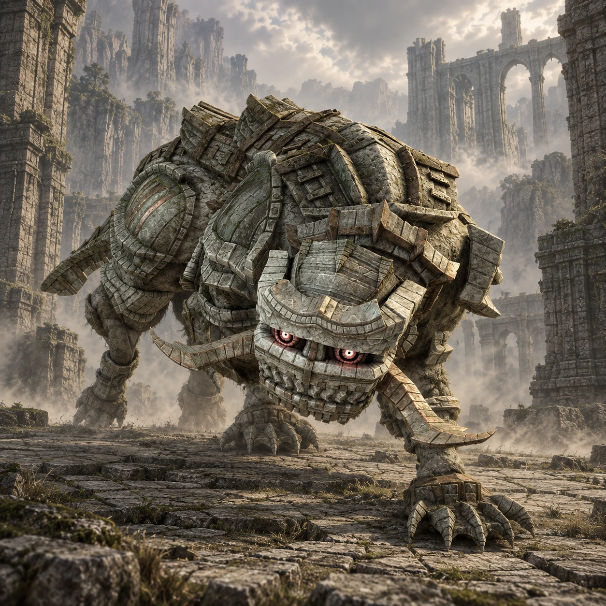

Dois nomes, duas origens
“Leo_A” é um nome de desenvolvimento. “Celosia” é o nome popular entre os fãs, não um nome próprio apresentado durante o jogo.

Colosso 11 · Terras Proibidas
Um pequeno guardião, uma fúria imensa.
Celosia troca a altura dos grandes gigantes pela rapidez das investidas. Entre altares acesos, cada metro de distância faz diferença.
Conheça o gigante01 / O gigante
O corpo compacto e a cabeça larga lembram uma fera coberta de pedra. A armadura acompanha o dorso, enquanto as patas curtas sustentam arrancadas rápidas.
Perto de Wander, Celosia ainda é imponente. A escala menor torna o confronto mais próximo, com pouco tempo para reagir quando o guardião cruza o salão.
*Altura e comprimento seguem as estimativas da Colossipédia, citada nas fontes. Os valores variam entre fontes e escalas; são referências aproximadas, não medidas oficiais confirmadas.
02 / O caminho
Cavalgue para o norte, acompanhando os pilares da grande ponte de entrada das Terras Proibidas. Procure a abertura do desfiladeiro.
Deixe Agro no alto e desça pelo caminho sinuoso. O templo se encontra junto à parede rochosa, acima da área de água no fundo do vale.
Abrir mapa das Terras Proibidas03 / Um olhar mais atento
“Leo_A” é um nome de desenvolvimento. “Celosia” é o nome popular entre os fãs, não um nome próprio apresentado durante o jogo.
Os braseiros fazem parte do ambiente do templo e permanecem acesos mesmo depois do confronto.
Celosia está entre os menores colossos. As investidas rápidas compensam a ausência de uma silhueta gigantesca no horizonte.
04 / O encontro
Algumas pistas para começar, deixando a descoberta da luta com você.
Dicas gerais para o modo Normal. A ficha não detalha todos os pontos vitais nem o desfecho do confronto.
Ficha baseada em registros da comunidade e guias de jogo. A arte é uma interpretação visual, não uma captura do jogo.